Summary of Firm-AFL
The original paper is Firm-AFL: High-Throughput Greybox Fuzzing of IoT Firmware via Augmented Process Emulation.
1 Background
- Discover vulnerabilities in IoT firmware is crucial to mitigate the security impact.
- AFL is an effective coverage-guided greybox fuzzing tool.
Challenges in IoT Firmware Fuzzing
- IoT firmware's strong dependency on the actual hardware configuration.
- High throughput (full system emulation) will lead to more computing resources needed to find vulnerabilities.
Solution
- transparency: no modification should be needed for the program in firmware to be fuzzed.
- efficiency: the fuzzing throughput of the overall system should come close to that of the user-mode emulation.
- Augmented process (user-mode) emulation with full system emulation.
- Coverage-based fuzzing.
Fuzzing
- Grey-box fuzzing is the most efficient and useful way of fuzzing in real-world practice.
- Most IoT devices' source codes are not available to do static analysis.
QEMU
A fast processor emulator based on dynamic binary translation.
Translation of instructions
- Translate several basic blocks at a time instead of instruction-by-instruction.
- Cache translated blocks and use block chaining to link them together.
Address space translation
System mode: implement a software Memory Management Unit (MMU) to handle memory access.
HVA = GPA + OFFSET
HVA: Host Virtual Addresses
GPA: Guest Physical Address
User mode: a much faster translation
HVA = GVA + OFFSET
GVA: Guest Virtual Addresses
Two main challenges:
- compatibility
- code coverage
| Avatar | IoTFuzzer | Firmafyne | Muench et al. | AFL | |
|---|---|---|---|---|---|
| Technique | Whitebox | Blackbox | PoC | Blackbox | Greybox |
| Compatibility | High | High | High | High | Low |
| Hardware Support | Hybrid | Real | Emulation | Mixed | None |
| Code Coverage | Medium | Low | N/A | Low | High |
| Throughput | Very Low | Low | Medium | Low to Medium | High |
| Zero-day Detection | Yes | Yes | No | Yes | Yes |
2 Motivation
High throughput greybox fuzzing for IoT programs based on emulation.
- Most IoT programs are only distributed in binary format, emulator-based instrumentation is the best available option.
- The full-emulation-based approach is faster than a real device because of the faster desktop processors.
The throughput of fuzzing can be boosted by applying the user-mode emulation.
Bottlenecks:
- memory address translation
- dynamic code translation
- syscall emulation
3 Augmented Process Emulation
3.1 Overview
Current Problem
- Poor compatibility of user-mode emulation.
- Low efficiency of system-mode emulation.
Requirement
- IoT firmware needs to be emulated in a system emulator.
- The firmware runs a POSIX-compatible OS.
Goal
- Transparency: The user-level program should behave as a system-mode emulation.
- High efficiency: Perform as the pure user-mode emulation.
Solution
Combines the best aspects of system-mode emulation and user-mode emulation.
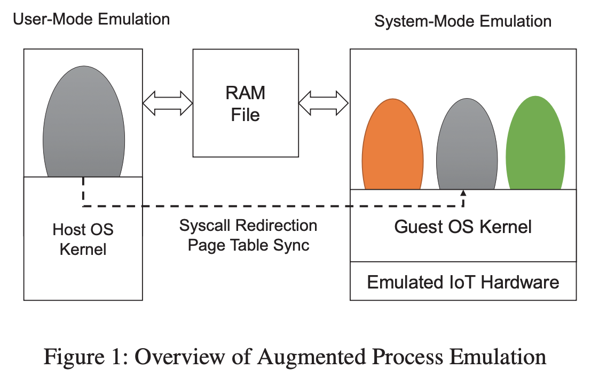
- Boot up the IoT firmware in the system-mode emulator and the user-level programs.
- Fuzzing reaches a predetermined point
- the entry point of the main function
- after receiving the first network packet
- Program execution is migrated to the user-mode emulation.
Memory state is shared between two emulation modes. (memory-mapped file RAM)
- System-mode: treat it as physical memory
- User-mode: virtual address
3.2 Memory Mapping
Bootstrapping
- Boot up the IoT firmware in system-mode emulation
- Launch the specified IoT program
- Use Virtual Machine Introspection (VMI) (provided by DECAF) to monitor the execution.
Page table
- Collect the virtual to the physical page mapping information.
- Send it over to the user-mode emulation side.
- Mapping is established by calling
mmap
Page Fault Handing
Execution in user-mode emulation.

Key question: determine when the page mapping has been established or an error occurs to switch back to the user-mode emulation to maximize execution speed.
To capture the right moment:
- Instrument the end of each basic block when a mapping is established.
- Execution within the specified process, which means the execution
- has been returned from the kernel to the user space to resume the faulting instruction
- mapping can be found in the software TLB (Translation Lookaside Buffer)
- pass the mapping information and the CPU state back to the user-mode
emulation
- create this new mapping by calling
mmap - resume the execution
- create this new mapping by calling
Preload Page Mapping
Modern OS loads memory pages in a lazy manner
mapping will not be established until a page fault is caused by the first memory access to it.
3.3 System Call Redirection
Problem: User-mode emulation of an IoT program will likely fail if the exceptions caused by the system calls are not properly handled.
Optimizing Filesystem-related System Calls
- Many system calls are related to the file system
- Map the file system from the firmware image, and mount it as a directory in the host OS
4. Firm-AFL Design and Implementation
4.1 Workflow of AFL
Main program: afl-fuzz
- Pick a seed from the seed queue
- Perform a random mutation
- Generate an input
- Feed the input to the target program
Collect the code coverage information
- Start the program using the user-mode QEMU
- Instrument the branch transitions of
- the target program
- the code coverage information is encoded and stored in a bitmap
"fork" is utilized to speed up the process
First, run the target program up to a certain point (
fork-server)the program's code and date have been properly initialized
Repeatedly fork a child process from it
Fed input into the forked child process
Collect coverage information and store it in the bitmap
shared among three processes (
afl-fuzz,fork-server, and the child instance)
4.2 AFL with Augmented Process Emulation
Replace the user-mode QEMU with augmented process emulation in AFL.
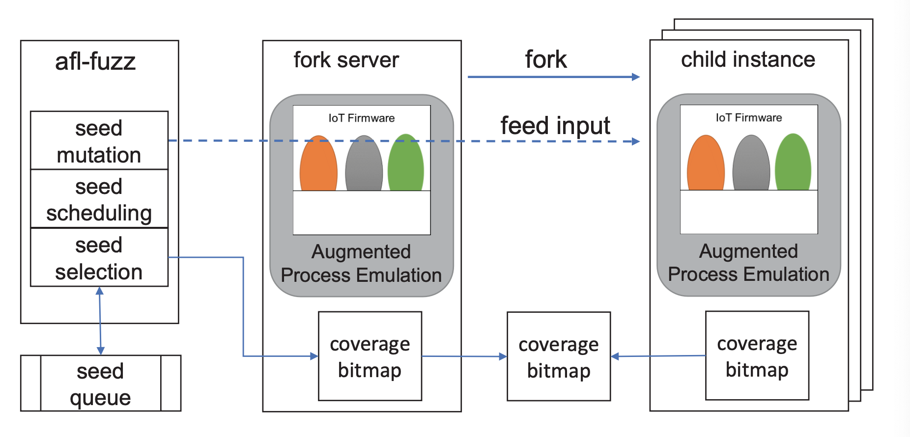
Bootstrapping
fork-server(system-mode emulation): boot up the firmware image and launch the program after boot up the system.Firmadyne: emulate a firmware image.
DECAF: integrated with Firmadyne to make use of its VMI capability.
Forking
Fork Point
- Default fork point: the entry point of the main function.
- This case: vulnerabilities trigger through the network interface
- hook the network-related system calls
- fork point: the first invocation of these system calls
fork
- fork a child process for the user-mode emulation
- fork a new virtual machine instance for the system-mode emulation
- expensive
use the snapshot created at the fork point
- expensive
Snapshot
QEMU offers
save_snapshotthat daves all the CPU registers and the memory space to a specific filefile write/read operations are very slow A lightweight snapshot mechanism based on the Copy-on-Write principle
- First mark the RAM file mapped into the system-mode QEMu as read-only.
- A memory write will cause a page fault.
- Make a copy of the page, then mark this page as writeable.
All modified memory pages during the fuzzing have been recorded.
Write these recorded pages back when restoring the snapshot.
Feeding Input
The inputs are fed through instrumenting system calls.
Collecting Coverage Information
Instrument the branch transitions in user-mode QEMU to compute the coverage bitmap.
5. Evaluation
- Evaluating emulation accuracy and overhead with
nbenchandlmbenchbenchmarks. - Evaluation of transparency, efficiency, and effectiveness of optimizations.
- Testing seven IoT programs and the Firmadyne dataset.
- Assessment of the capability to discover 0-day vulnerabilities.
Transparency
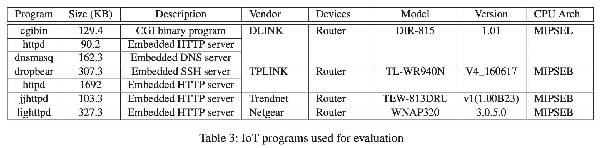
Firm-AFL can provide transparent emulation as if the program is executing in full-system emulation.
Efficiency
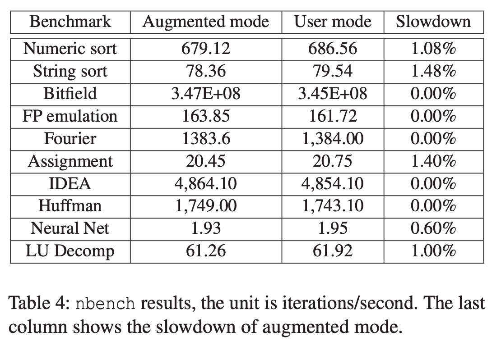 |
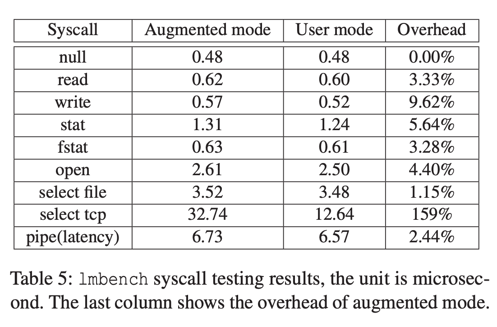 |
Firm-AFL provides an average improvement of 8.2 times compared to the best result on full-system emulation based fuzzing.
Effectiveness of Optimization
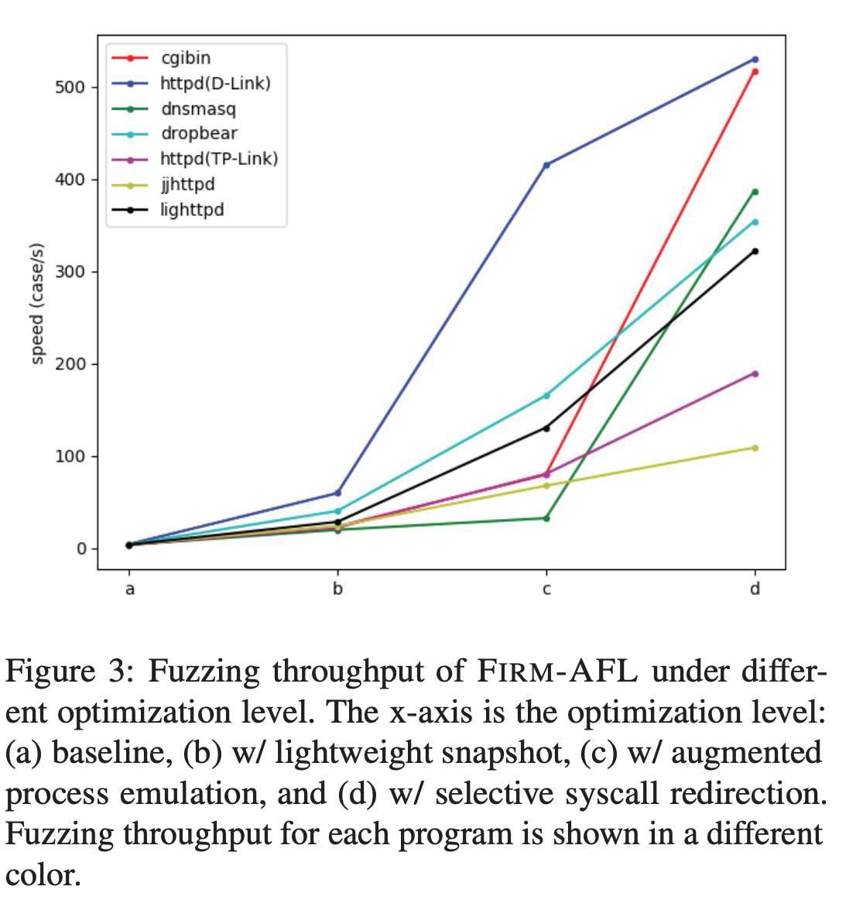 |
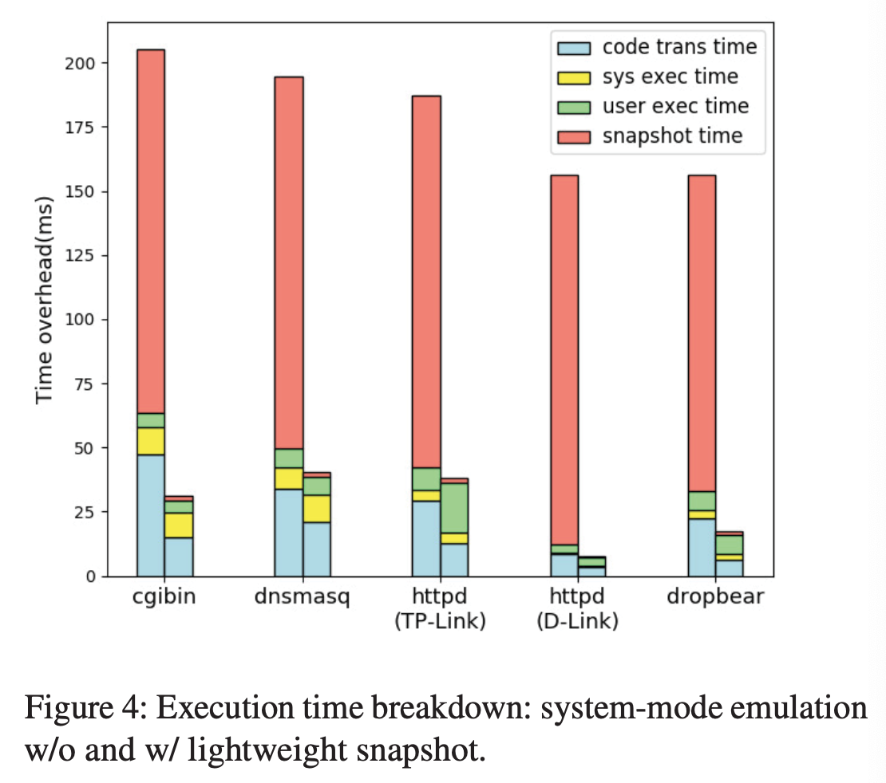 |
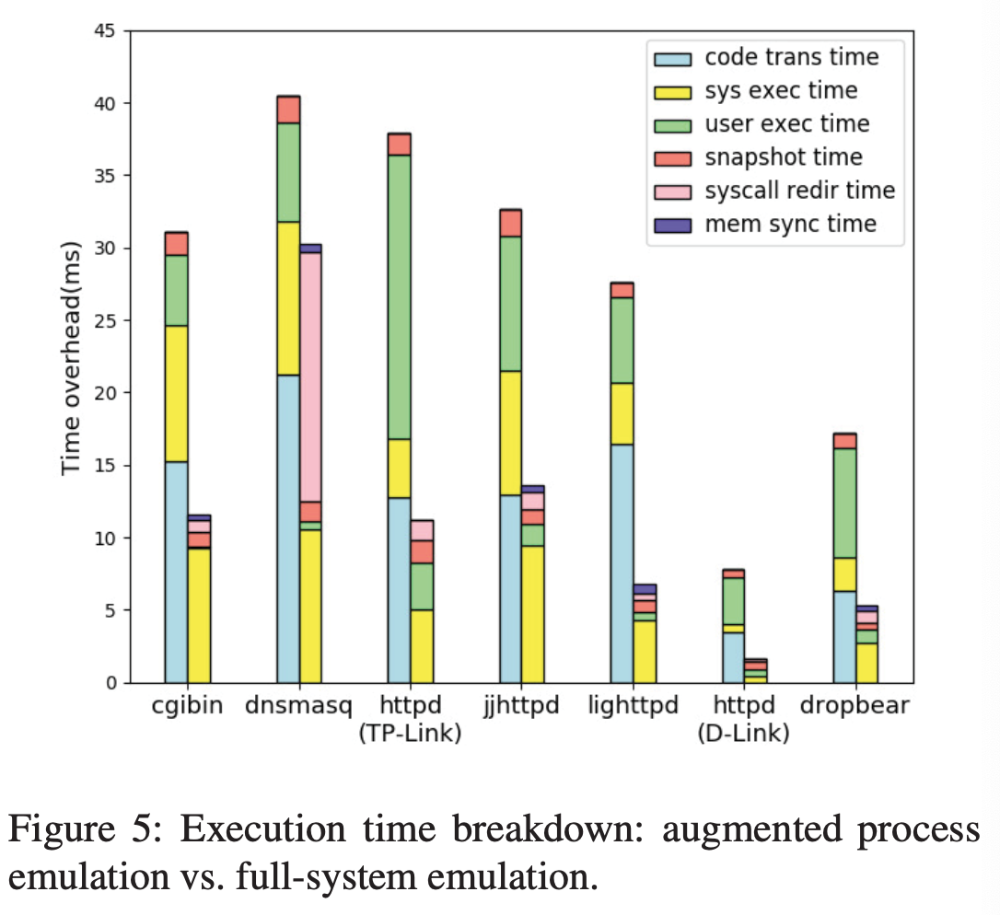 |
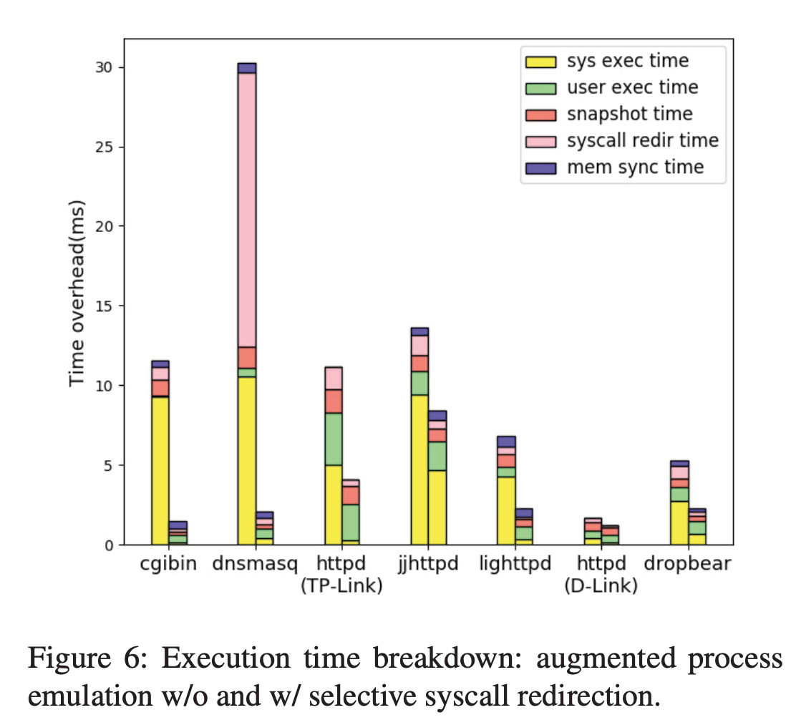 |
Augmented Process Emulation and selective redirection have successfully addressed the three bottlenecks (memory address translation, dynamic code translation, and syscall emulation).
Vulnerability Discovery
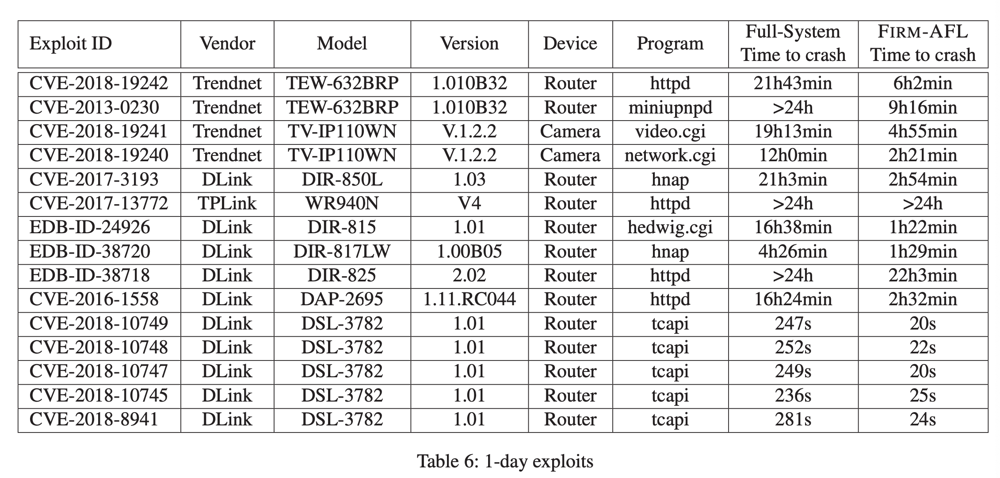
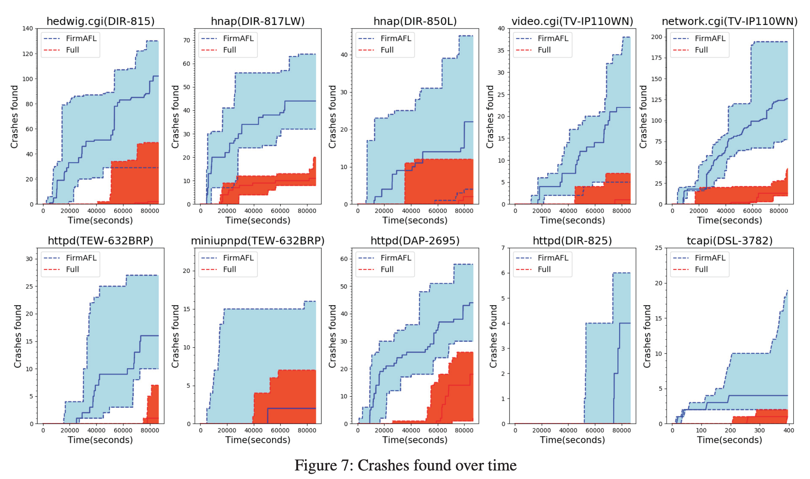
Firm-AFL is able to find 1-day vulnerabilities much faster than system-mode emulation based fuzzing and is able to find 0-day vulnerabilities.
6. Limitations
- Limitations on supported CPU architectures (
mipsel,mipseb, andarmel). - Limitations on supported IoT firmware.
- Challenges and future work prospects for supporting non-POSIX programs.